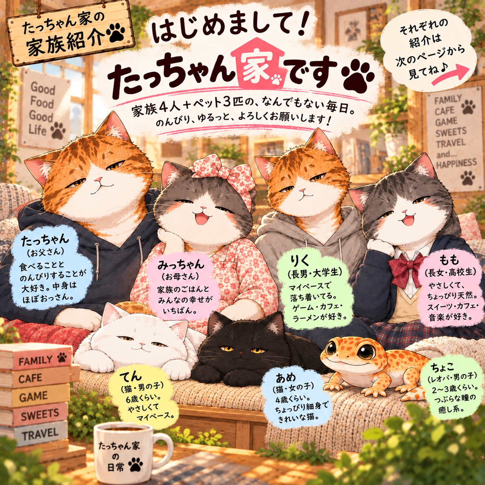

🐾 🏠 🐾
たっちゃん家へ
ようこそ！
まいど〜！ 猫たち家族のゆるっとした毎日をお届けするで〜。
笑ったり、のんびりしたり。気軽に遊びに来てな！
 家族に会いにいく ↓
家族に会いにいく ↓🐱 たっちゃん家の家族
家族4人とペット3匹。みんなそれぞれ個性たっぷりやで！

母・みっちゃん

長男・りく

長女・もも

てん 🐈

あめ 🐈⬛

ちょこ 🦎
📖 たっちゃん日記
今日もぼちぼち、ええ日やったな〜
家族の何気ない日常を、写真や動画でお届けするで！

🛒 たっちゃんのおすすめ
お気に入り、集めてみたで！
たっちゃん家が気になるものを少しずつ紹介するで。
※ 楽天ROOMのリンクは、URLが決まったら追加します。
🔮 たっちゃん干支占い
今日の運勢、どないやろ？
12干支の占いをお届け。信じる信じないは自分次第！
🍳 もものお料理レッスンノート
もも、今日もお料理に挑戦！
料理教室で習ったことや、おいしい挑戦を少しずつ紹介するで。
💬 たっちゃん家のLINEスタンプ
🍽️ 食べ歩き yuri
南大阪・堺・泉州のおいしいもん
気になるお店や、おいしい発見を少しずつ紹介するで。
※ 食べ歩き情報へのリンクは、これから追加します。